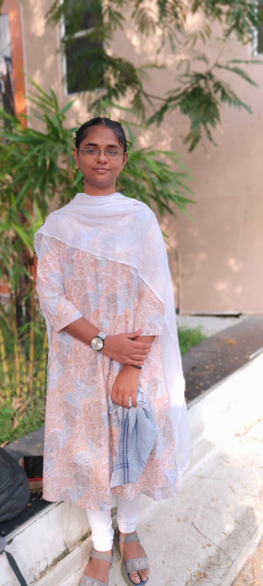

Get to Know Me
Discover My Story, Skills and Aspirations

About Me
I'm Viswadharini Navamani, and I am from Kumarapalayam. I completed my SSlC in AVS Matriculation School.My HSLC in J.K.K. Nattraja Matriculation Higher Secondary and pursued my Bachelor’s degree in Electronics and Communication Engineering at Nandha Engineering College, graduating with a CGPA of 9.08.
During my college life, I worked on three major projects. The first was a Portable Component Tester, which is designed to identify electronic components and check their characteristics and faults. My second project was a Smart GSM-Free Gas Leakage Detection System, which detects gas leakage and sends alerts over the internet without using a GSM module. My third project was a Smart Fire Alert and Monitoring System designed for warehouses. It detects fire-related conditions and sends alerts to the warehouse owner and the nearby fire station through internet connectivity without using GSM. It also monitors environmental parameters such as temperature, humidity, and gas concentrations.
Coming to my PDs, I have a strong PD in antiquarianism, which means collecting and learning about historical objects. I enjoy reading historical novels, watching historical movies, and collecting old coins, stamps, and antique items. These hobbies help me explore history and understand different perspectives. My strengths are that I am a quick learner, a hardworking person, and adaptable to different situations. I believe in maintaining a positive mindset, treating people respectfully, and making the best use of every opportunity. My career objective is to continuously enhance my knowledge and technical skills, take on new challenges, and contribute effectively to the success and growth of the organization while building a strong and successful professional career. My favourite quote is, “The future starts today, not tomorrow.” I follow this principle by believing in taking action today rather than postponing my goals. I understand that I still have a lot to learn, and I am ready to work hard, accept challenges, and improve myself continuously.